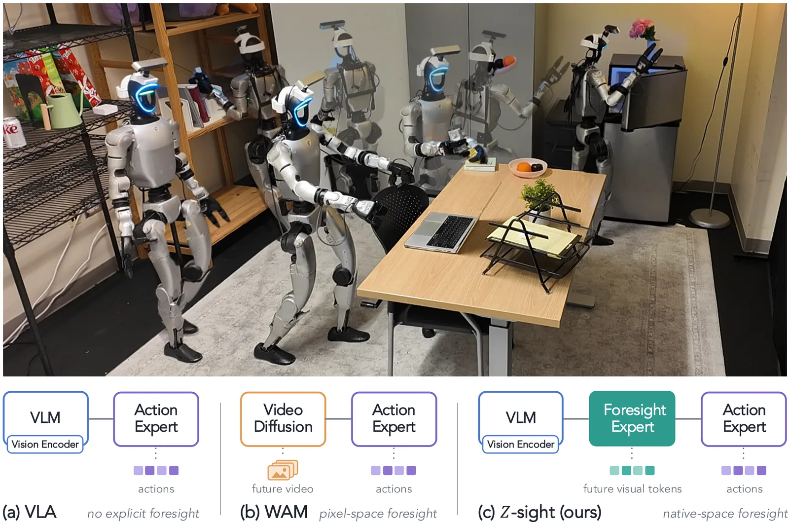
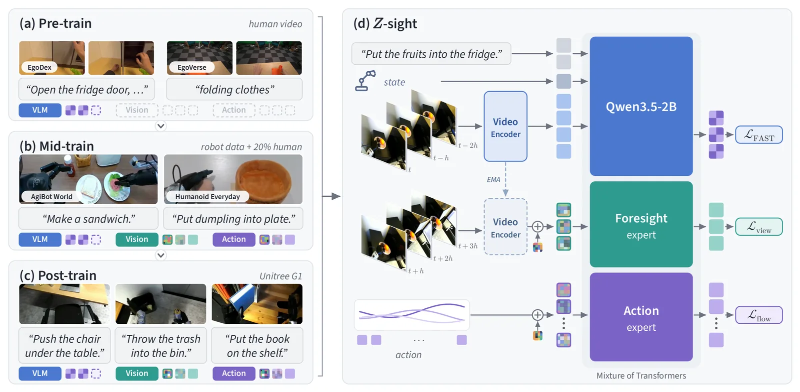
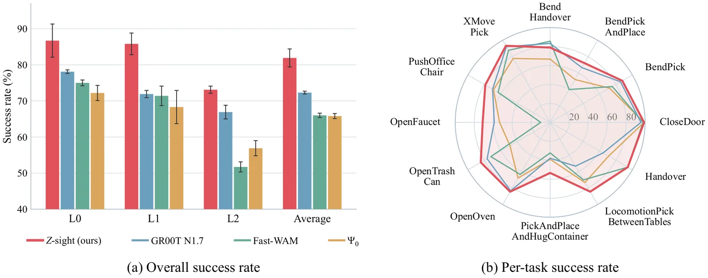

O Dilema da Previsão em Robótica
Os modelos Vision-Language-Action (VLA) têm se mostrado promissores para transferir conhecimento multimodal para o controle robótico. No entanto, eles geralmente mapeiam a observação atual diretamente para ações, sem uma compreensão explícita da dinâmica futura do ambiente. Por outro lado, os World Action Models (WAMs) tentam resolver isso gerando vídeos futuros junto com as ações. Embora eficaz, essa abordagem herda o custo computacional massivo dos geradores de vídeo baseados em difusão.
A Limitação dos Métodos Latentes
Uma solução intermediária recente move a supervisão do futuro para o espaço latente, evitando a geração de pixels. Contudo, esses métodos frequentemente alinham características intermediárias do modelo de política com embeddings compactos ou dependem de codificadores de destino congelados. Isso cria uma desconexão: a previsão do futuro não ocorre no mesmo espaço de representação onde o VLM percebe o presente, limitando a coerência semântica e física da previsão.

A Proposta: Z-sight
Os autores do paper Z-sight, afiliados à Maven Robotics e à Universidade do Sul da Califórnia (USC), propõem uma arquitetura unificada que prevê o futuro diretamente no espaço de tokens visuais nativo do VLM. A ideia central é que a percepção e a previsão devem co-evoluir no mesmo espaço de representação. Em vez de sintetizar pixels ou usar um codificador externo, o Z-sight prediz os tokens espaciais que o codificador de visão produziria para as observações futuras.
Arquitetura e Mecanismo
O núcleo do Z-sight é um Mixture-of-Transformers (MoT) que acopla três componentes: o backbone do VLM, um especialista de foresight (previsão) e um especialista de ação contínua. O VLM codifica a história de observações, o estado proprioceptivo e as instruções linguísticas em tokens visuais espaciais. Esses tokens formam o 'espaço nativo de representação' do modelo.
Previsão no Espaço Nativo
Para prever o futuro, o especialista de foresight utiliza flow matching no espaço de tokens. Ele recebe tokens futuros ruidosos e tokens normalizados do frame atual. Diferente de métodos que usam um codificador alvo congelado, o Z-sight usa um professor EMA (Exponential Moving Average) que acompanha o codificador online. Isso garante que o alvo de previsão evolua junto com o modelo, mantendo o alinhamento semântico.

Treinamento em Estágios
O treinamento ocorre em três fases. Primeiro, o VLM é pré-treinado em vídeos egocêntricos humanos. Em seguida, no mid-training, todos os streams (VLM, foresight, ação) são ajustados em dados mistos de robôs e humanos. Finalmente, no post-training, o modelo é adaptado para a embodiment alvo. Durante o mid-training, o VLM é ajustado para prever tokens de ação discretos (FAST), enquanto o especialista de visão se adapta via supervisão de ação, sem corromper o conhecimento linguístico do VLM.
Inferência e Controle
Durante a inferência, ambos os especialistas denoizam simultaneamente os tokens visuais futuros e as ações contínuas. O especialista de ação atende diretamente aos tokens visuais previstos, permitindo que ele leia a previsão em formação. Isso fornece ao controlador uma dinâmica latente online, informando a ação com base no que o modelo prevê que acontecerá, sem a necessidade de reconstrução de pixels ou encoders externos.
Resultados no SIMPLE e Unitree G1
O Z-sight foi avaliado em benchmarks de simulação e robôs reais. No benchmark SIMPLE, que testa locomoção e manipulação de corpo inteiro de humanoides, o Z-sight atingiu 81.9% de sucesso, superando o GR00T N1.7 em 9.6 pontos e o Fast-WAM em 15.9 pontos. A vantagem foi consistente em todos os níveis de dificuldade (L0, L1, L2), demonstrando robustez em cenários com variações de iluminação, materiais e posições de alvo.

Análise de Ablação
Os autores realizaram experimentos de ablação para entender a contribuição de cada componente. A previsão futura no espaço nativo co-evolutivo mostrou-se superior ao alinhamento implícito de características ou ao uso de codificadores externos congelados. A intervenção de tempo de teste mostrou que o especialista de ação realmente depende do conteúdo e da incerteza da previsão de foresight para executar movimentos coordenados, especialmente em transições de contato.
Eficiência Computacional
Um benefício chave do Z-sight é a eficiência. Ao operar no espaço de tokens latentes e não no espaço de pixels, o modelo evita o custo de geração de vídeo. A inferência ocorre a 110 ms por chunk de ação, permitindo controle de alta frequência. Isso torna o Z-sight viável para implementação em robôs reais com recursos computacionais limitados, ao contrário dos WAMs baseados em difusão de vídeo.
Limitações e Trabalhos Futuros
Apesar dos resultados promissores, o paper reconhece limitações. Atualmente, a previsão de foresight é baseada apenas na observação, sem condicionamento a ações candidatas. Isso significa que o modelo não pode comparar explicitamente os resultados de diferentes ações no espaço latente, limitando a capacidade de planejamento de longo prazo no tempo de inferência. Futuros trabalhos podem explorar o condicionamento da previsão por ações para habilitar o planejamento no espaço de representação nativa.
Conclusão
O Z-sight apresenta uma unificação eficaz entre modelos de mundo latente e VLAs. Ao predizer o futuro no mesmo espaço de representação onde o modelo percebe o presente, ele evita as armadilhas de custo computacional dos geradores de vídeo e a desconexão semântica de métodos latentes anteriores. Os resultados em robôs humanoides demonstram que essa abordagem pode melhorar significativamente a locomoção e manipulação de corpo inteiro, estabelecendo um novo caminho para a modelagem de mundo corporificada.
O que fica
- Z-sight prediz tokens visuais futuros e ações simultaneamente no espaço nativo do VLM, unificando percepção e previsão.
- O modelo alcança 81.9% de sucesso no benchmark SIMPLE e 73.3% no robô real Unitree G1, superando baselines significativamente.
- A arquitetura usa um MoT com especialista de foresight e ação, evitando colapso de representação via paradas de gradiente.
- Limitações incluem a previsão baseada apenas na observação, sem condicionamento a ações candidatas para planejamento.
Paper original: $Z$-sight: Unifying Vision-Language-Action and Latent World Modeling
Comentários
Nenhum comentário ainda. Seja o primeiro.